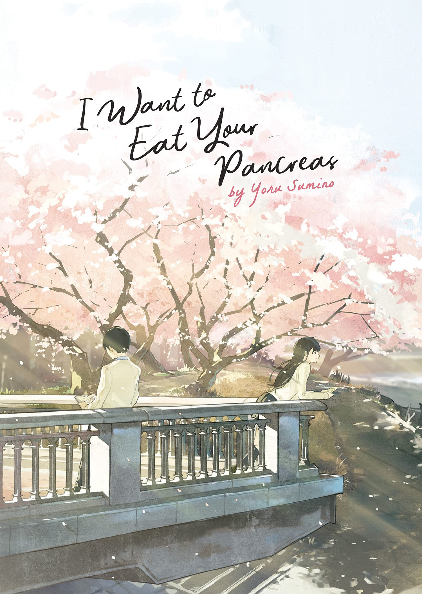

I had some fun with the example code that we did in class on Tuesday!
Anyways, what's that one movie that you've really wanted to get back around to watching recently?
I know I personally want to go back and rewatch "I Want to Eat Your Pancreas."
Click here to listen to my favorite song from the movie!
No, the movie is not literally about eating someone's pancreas. Trust me.
Instead, the movie focuses on two characters and their evolving relationship.
Our focuses are on Sakura Yamauchi, a popular girl with a secret - she has severe pancreatic issues, and is supposed to die soon, although there's no specific window of time.
Our other character is an unnamed guy(his name is spoilers), an antisocial bookworm who is fairly apathetic towards things that aren't books.
The two go to the same school, but only get to know each other after the boy finds Sakura's diary while at the hospital for a checkup. Sakura entrusts him with her secret and starts to insert herself into his life, determined to drag him around with her to check things off her bucket list(and also to try to get him to break out of his shell, but he doesn't need to know that.)
Anyways, if the title doesn't refer to cannibalism, then what does it refer to?
Early on in the movie, Sakura explains how a few folkloric factoids she’s read while dealing with her condition, like how people suffering from organ problems used to believe that eating the corresponding organ of an animal would cure them of their illness, or how some cultures believe eating the flesh of a loved one means the deceased’s soul will live on inside them.
This turns out to be both a fun and poignant way to talk about her illness as well as a truly meaningful phrase that the two share as they get closer throughout the movie.
I love this movie for a few reasons.
Sure, it's another piece of fiction with the antisocial guy and the outgoing girl who's terminally ill.
However, the pacing is incredible, the art style is gorgeous, the cast is strong, the character development is sublime, the plot twists are genuinely shocking, and the relationship between our two main characters is so strong that I honestly found myself entertained nonetheless.
It's more than the usual case of antisocial guy finding his perfect girl who also happens to be dying. The journey the pair takes us on touches down in so many other areas of human connection, which I really appreciate.
Also,come on. You can't tell me this doesn't look really pretty.(I'm a sucker for sakura blossoms too, to be fair.)

Should you watch this movie?
Honestly, it depends on what you're into.
I sobbed through most of the ending on my first watch-through, to be honest.
The themes of human connection, friendship, loss, and finding meaning in life really resonated with me.
It's a must-see if you love things that'll touch you deeply, and also a must-see if you just enjoy tear-jerking content in general.
There's also a light novel, manga, and live action film, so you can choose your preferred medium to experience the story! I'll put the image of the cover of the novel below in case you happen to come across it.
